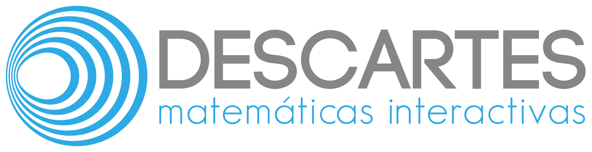

Versión:
a.b
descartes-min.js:
1000-01-01
NW.js:
1
El editor Descartes es un programa de código abierto y gratuito, programado por Joel Espinosa Longi (
Instituto de Matemáticas
, UNAM), basado en el
editor Descartes
.